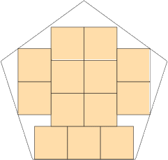
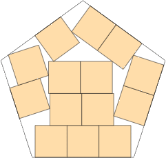

s = 3.121+
Found by David W. Cantrell
in July 2012.
Found by David W. Cantrell
in July 2012.
s = 3.284+
Found by David W. Cantrell
in July 2012.
| 1. 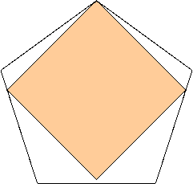 | 2. 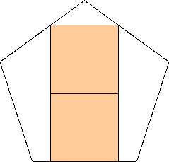 | 3. 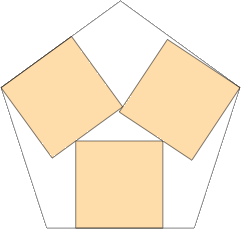 | ||
| s = cos(27°) / cos(18°) s = .936+ Trivial. | s = 4√(1-2/√5)+√5-2 s = 1.535+ Found by Erich Friedman in March 2012. | s = 1.695+ Found by David W. Cantrell in July 2012. |
| 4. 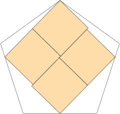 | 5. 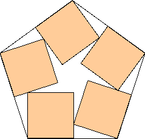 | 6. 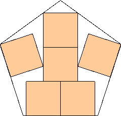 | ||
| s = 1.861+ Found by Maurizio Morandi in July 2012. | s = 1 + cos(18°) s = 1.951+ Found by Erich Friedman in March 2012. | s = 6√(1-2/√5)+√5-2 s = 2.185+ Found by Erich Friedman in March 2012. |
| 7. 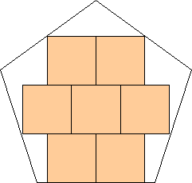 | 8. 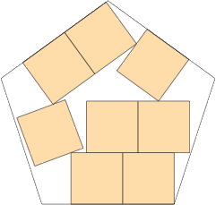 | 9. 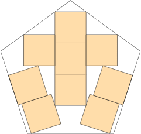 | ||
| s = 6√(1-2/√5)+2√5-4 s = 2.421+ Found by Erich Friedman in July 2012. | s = 2.565+ David W. Cantrell in July 2012. | s = 2.770+ Found by David W. Cantrell in July 2012. |
| 10. 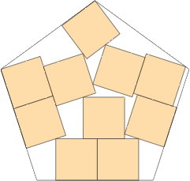 | 11. 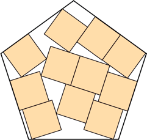 | 12. 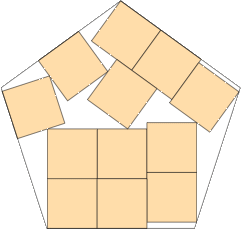 | ||
| s = 2.809+ Found by David W. Cantrell in July 2012. | s = 2.921+ Found by David W. Cantrell in July 2012. | s = 2.973+ Found by David W. Cantrell in July 2012. |
| 13. 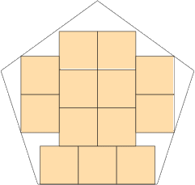 | 14. 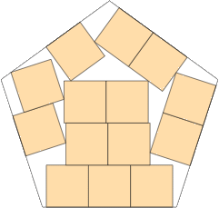 | 15.
| ||
| s = 2√(1-2/√5)+2√5-2 s = 3.121+ Found by David W. Cantrell in July 2012. | s = 3.187+ Found by David W. Cantrell in July 2012. | s = (√(125-38√5)+8-2√5)/3 s = 3.284+ Found by David W. Cantrell in July 2012. |